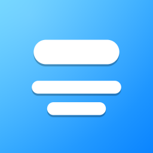

Tweaks rootless pour Dopamine
10 tweaks pour iOS 16 – 18, faits pour l'iPhone SE et compagnie.
https://rootatsblowfr.github.io/sileo/#TweakCatégorieVersion
1
StatusInfoRéseau, RAM, température et batterie sous l'heure.Interface1.0.1210 tweaks pour iOS 16 – 18, faits pour l'iPhone SE et compagnie.
https://rootatsblowfr.github.io/sileo/
StatusInfoRéseau, RAM, température et batterie sous l'heure.Interface1.0.12